SECRETS OF MATHEMATICAL PRINCIPLES
§ Hệ Tọa Độ Cực & Ứng dụng
Tác giả: Secrets of Mathematical Principles
Mail: smp.cqt0907@gmail.com
GOAL:
- Làm thế nào để xác định tọa độ cực của một điểm trên mặt phẳng?
- Làm thế nào để chuyển đổi từ tọa độ cực sang tọa độ chữ nhật (hoặc Descartes)?
- Làm thế nào để chuyển đổi ngược lại, từ tọa độ chữ nhật sang tọa độ cực?
- Làm thế nào để vẽ đúng đồ thị của một phương trình cực, cả bằng tay và bằng máy tính?
Việc sử dụng hệ tọa độ này đã tạo nên một bước tiến mang tính cách mạng trong toán học, vì nó là cầu nối đầu tiên giữa hình học và đại số.
Mặc dù hệ tọa độ chữ nhật có vai trò rất quan trọng, song vẫn còn những phương pháp khác để xác định vị trí điểm trong mặt phẳng. Một trong số đó chính là hệ tọa độ cực, được trình bày trong mục này.
1. Nhắc lại một số kiến thức
Định nghĩa. Xét hệ tọa độ $Oxy$, đường tròn tâm $O(a; b)$, bán kính $R$ là tập hợp của tất cả các điểm $M(x_0; y_0)$ sao cho $OM = R$. Nói cách khác, là các điểm thỏa mãn phương trình:
- $\sin^2 \theta + \cos^2 \theta = 1$
- $\sin 2 \theta = 2 \cdot \cos \theta \cdot \sin \theta$
- $\cos 2\theta = 2\cdot \cos^2 \theta - 1$
- $\tan \theta = \frac{\sin \theta}{\cos \theta}, \ \cot \theta = \frac{\cos \theta}{\sin \theta}$
- $1 + \tan^2 \theta = \frac{1}{\cos^2 \theta}$
- $1 + \cot^2 \theta = \frac{1}{\sin^2 \theta}$
2. Động lực
Ví dụ. Trong hệ tọa độ Descartes (tọa độ Descartes $(x,y)$), ta đo vị trí bằng độ dài theo hai phương vuông góc. Nhưng rất nhiều đối tượng trong tự nhiên không vuông vức mà đối xứng tròn, ví dụ:
- Quỹ đạo hành tinh, giọt nước, sóng tròn, anten, bánh xe, radar...
- Các bài toán vật lí có tâm đối xứng (như lực hấp dẫn, điện trường, trường từ).
Với những tình huống như này việc biểu diễn $(x, y)$ sẽ rất cồng kềnh. Ngược lại, nếu ta mô tả bằng góc quay và khoảng cách tới tâm, mọi thứ trở nên đơn giản, tự nhiên và ngắn gọn. Chẳng hạn đường tròn tâm $O(0; 0)$ bán kính $a$:
- Trong Descartes: $x^2 + y^2 = a$.
- Trong tọa độ cực: $r = a$.
Ví dụ. Khi ta giải tích phân, đạo hàm, hay phương trình vi phân, nhiều bài khó nhằn trong tọa độ $x; \ y$ trở nên dễ hơn hẳn nếu đổi sang tọa độ cực. Bởi khi công thức đơn giản hơn vì việc lấy đạo hàm cũng dễ hơn.
Ví dụ. Một số ứng dụng trong khoa học kĩ thuật là:
- Vật lý: bài toán điện trường, từ trường, sóng âm, cơ học chất lưu ... đều đối xứng tròn.
- Kỹ thuật: thiết kế radar, ăng-ten, robot quay quanh tâm, các đồ thị hình hoa.
- Máy học & xử lý ảnh: khi nhận diện mẫu tròn (như con mắt, bánh xe), tọa độ cực giúp tách phần xoay ra khỏi phần xa gần.
3. Định nghĩa
3.1. Giới thiệu
Trong cuốn On Spirals, Archimedes mô tả đường xoắn ốc Archimedes, một hàm số có bán kính phụ thuộc vào góc. Tuy nhiên, công trình của người Hy Lạp này không mở rộng đến một hệ tọa độ đầy đủ.
Trong cuốn Method of Fluxions (viết năm 1671, xuất bản năm 1736), Sir Isaac Newton đã nghiên cứu các phép biến đổi giữa tọa độ cực, mà ông gọi là Seventh Manner; For Spirals, và chín hệ tọa độ khác. Trong tạp chí Acta Eruditorum (1691), Jacob Bernoulli đã sử dụng một hệ tọa độ với một điểm trên một đường thẳng, lần lượt được gọi là cực và trục cực. Tọa độ được xác định bởi khoảng cách từ cực và góc từ trục cực. Công trình của Bernoulli đã mở rộng sang việc tìm bán kính cong của các đường cong được biểu thị trong các tọa độ này.
Alexis Clairaut là người đầu tiên nghĩ đến tọa độ cực trong ba chiều, và Leonhard Euler là người đầu tiên thực sự phát triển chúng.
3.2. Định nghĩa
Định nghĩa. Trong hệ tọa độ cực, ta chọn một điểm gốc (hay còn gọi là cực) ký hiệu là $O$, và một tia làm chuẩn cố định $OA$. Một điểm $P$ được mô tả bằng cách xác định hai đại lượng:
- $r$: bán kính cực (radial distance) — khoảng cách có hướng từ cực $O$ đến điểm $P$.
- $\theta$: góc cực (polar angle) — góc giữa trục cực và đoạn thẳng $OP$ (đơn vị có thể là radian hoặc độ).
Khi đó điểm $P$ có tọa độ cực là $(r\ ; \theta)$
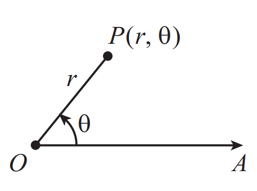
Tương tự như trong hệ tọa độ Descartes, hệ tọa độ cực cũng có những quy ước liên quan đến hướng đo góc. Các quy ước này được nêu như sau:
- Góc $\theta$ được đo bằng radian;
- Góc $\theta$ được đo kể từ tia chuẩn ban đầu, và được xem là dương khi đo ngược chiều kim đồng hồ từ tia chuẩn, hoặc âm khi đo theo chiều kim đồng hồ từ tia chuẩn.
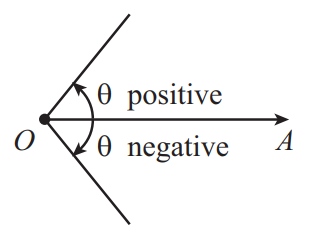
- Giá trị của $\theta$ bị giới hạn trong khoảng: $-\pi < \theta \le \pi$;
- Giá trị của $r$ không nhất thiết dương.
- Nếu $r > 0$, điểm $P$ nằm trên tia tạo với trục cực góc $\theta$.
- Nếu $r < 0$, điểm $P$ nằm trên tia đối diện, tức là tia tạo góc $\theta + \pi$ với trục cực.
- Nếu $r = 0$, điểm $P$ chính là cực $O$.
Nhận xét. Tọa độ cực của một điểm $P$ đối với cực $O$ và tia chuẩn $OA$ được biểu diễn bởi cặp số $(r, \theta)$, trong đó $|r|$ là độ dài đoạn thẳng $OP$ và $\theta$ là góc tạo bởi hai tia $OA$ và $OP$.
Ta luôn giả sử $r > 0$ và $-\pi < \theta \le \pi$. Hãy thử giải thích vì sao ta có thể giả sử như vậy ?. Đó là một điểm quan trọng để chuyển đổi các hệ tọa độ đơn giản hơn.
Chứng minh. Dùng ý tưởng của nhận xét một điểm $P$ được biểu diễn dưới nhiều cách.
3.3. Chuyển đổi giữa hai hệ tọa độ
Xét một điểm $P$ có tọa độ Descartes $(x, y)$ và tọa độ cực $(r, \theta)$. Ta quy ước rằng cực trùng với gốc tọa độ của hệ Descartes, và tia chuẩn ban đầu trùng với trục hoành ($x$-axis).
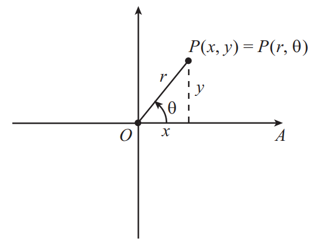
Từ hình vẽ, ta nhận thấy có hai cặp phương trình có thể dùng để chuyển đổi giữa hai hệ tọa độ:
dùng để chuyển từ tọa độ cực sang tọa độ Descartes, và
dùng để chuyển từ tọa độ Descartes sang tọa độ cực.
Nhận xét. Cả hai bộ công thức này đều hữu ích, nhưng cần được sử dụng cẩn thận, vì rất dễ thu được giá trị sai của góc $\theta$ khi điểm không nằm trong góc phần tư thứ nhất. Do đó, việc vẽ điểm lên mặt phẳng trước khi tính toán luôn là một thói quen tốt.
Ví dụ. Trong hình, điểm có tọa độ $(\sqrt{3}, 1)$ được biểu diễn trên mặt phẳng tọa độ. Hãy xác định giá trị của $r$ và góc $\theta$ (theo radian và độ).
Lời giải. Ta có điểm $(x, y) = (\sqrt{3}, 1)$.
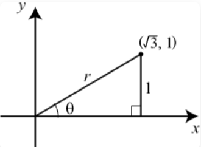
- Bán kính cực:
$$r = \sqrt{x^2 + y^2} = \sqrt{(\sqrt{3})^2 + 1^2} = \sqrt{3 + 1} = 2.$$
- Góc $\theta$ thỏa mãn
$$\tan \theta = \frac{y}{x} = \frac{1}{\sqrt{3}}.$$Do đó$$\theta = \tan^{-1}\left(\frac{1}{\sqrt{3}}\right) = \frac{\pi}{6} \text{ radians} = 30^\circ.$$
Kết luận:
Nhận xét. Như vậy, thay vì nói điểm $(\sqrt{3}, 1)$, ta có thể nói:
“Hãy đi $2$ đơn vị theo hướng tạo góc $\frac{\pi}{6}$ radian (hay $30^\circ$) so với trục $x$ dương.”
- Nếu $x > 0$ và $y > 0$ → góc $\theta$ nằm trong góc phần tư I.
- Nếu $x < 0$ và $y > 0$ → góc $\theta$ nằm trong góc phần tư II.
- Nếu $x < 0$ và $y < 0$ → góc $\theta$ nằm trong góc phần tư III.
- Nếu $x > 0$ và $y < 0$ → góc $\theta$ nằm trong góc phần tư IV.
4. Một số phương trình đường cong trong tọa độ cực
Trong hệ tọa độ chữ nhật, đồ thị của một phương trình là tập hợp các điểm $(x, y)$ thỏa mãn một quan hệ nào đó, thường viết dưới dạng hàm $y = f(x)$. Tương tự,
Định nghĩa. Trong hệ tọa độ cực, phương trình cực là một quan hệ giữa hai biến $r$ và $\theta$, thường viết dưới dạng: $r = f(\theta)$. Khi đó, đồ thị cực là tập hợp tất cả các điểm $P(r, \theta)$ sao cho cặp $(r, \theta)$ thỏa mãn phương trình này.
Cách vẽ. Để vẽ đồ thị của phương trình $r = f(\theta)$, ta tiến hành theo các bước:
- Lập bảng giá trị: chọn một số giá trị $\theta$, tính giá trị tương ứng $r = f(\theta)$.
- Vẽ điểm: biểu diễn từng điểm $(r, \theta)$ trên mặt phẳng cực (dạng các vòng tròn đồng tâm và các tia).
- Nối điểm: dùng một đường cong trơn (smooth curve) để nối các điểm lại.
Ví dụ. Xét phương trình cực: $r = 4\sin\theta.$
Lời giải. Lập bảng giá trị sau:
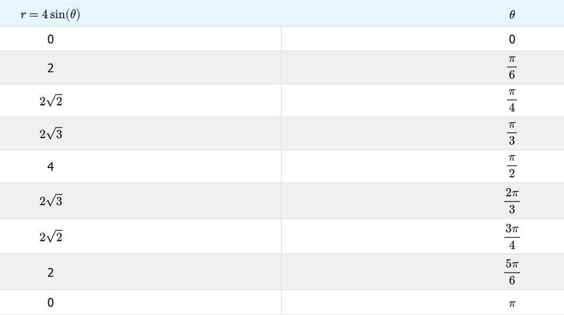
Vẽ các điểm này trên giấy đồ thị cực và vẽ một đường cong qua các điểm để biểu diễn phương trình:
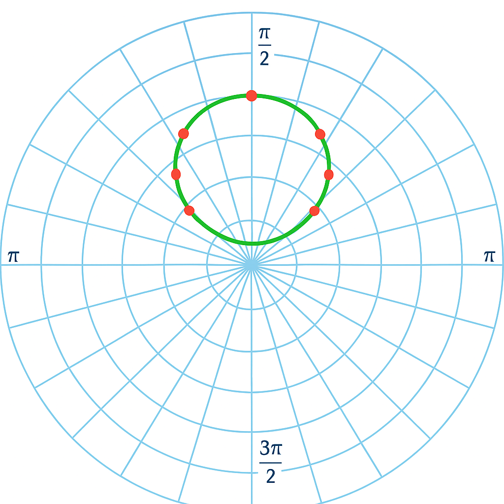
Kết luận: Đồ thị của phương trình cực $r = 4\sin\theta$ là một đường cong có tâm tại $(0, 2)$ và bán kính bằng $2$.
Nó có vẻ giống một hình tròn. Hãy xem phép biến đổi sang hệ tọa độ Descartes như sau:
Chuyển vế và hoàn thiện bình phương theo $y$:
Trong phần này, chúng ta đã khảo sát một số đồ thị của các phương trình cực. Có rất nhiều dạng đồ thị thú vị có thể được mô tả bằng phương trình cực, mà trong hệ tọa độ chữ nhật thì việc biểu diễn trở nên phức tạp hơn nhiều.
Vì hệ tọa độ cực dựa trên các vòng tròn đồng tâm, nên không có gì đáng ngạc nhiên khi các đường tròn có tâm tại cực lại có dạng phương trình rất “đơn giản”, chẳng hạn: $r = a$
Trong các bài tập vừa rồi, ta đã gặp các phương trình cực có đồ thị là những đường tròn với tâm không nằm tại cực. Những trường hợp đó chính là các ví dụ đặc biệt của kết quả tổng quát sau.
- Đồ thị của phương trình $r = 2a\sin\theta$ là một đường tròn bán kính $a$, có tâm tại điểm $(0, a)$ trong hệ tọa độ chữ nhật, hoặc tại điểm $(a, \frac{\pi}{2})$ trong hệ tọa độ cực.
- Đồ thị của phương trình $r = 2a\cos\theta$ là một đường tròn bán kính $a$, có tâm tại điểm $(a, 0)$ trong hệ tọa độ chữ nhật, hoặc tại điểm $(a, 0)$ trong hệ tọa độ cực.
Chứng minh. Các bạn có thể tự chứng minh lại xem như một bài tập biến đổi lượng giác.
Hãy xem thử một số hình ảnh cũng hay ho của phương trình cực:
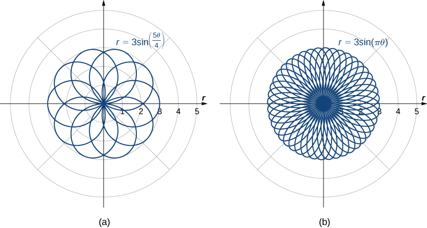
Hoặc bạn có biết hình ảnh này?
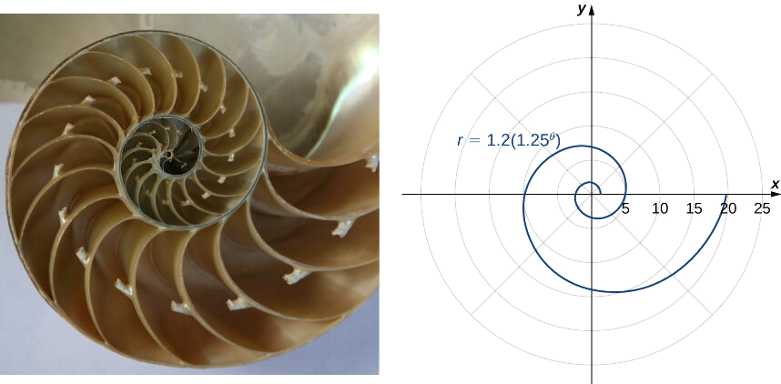
Đây là hình dạng của loài chambered nautilus, là 1 loại ốc. Cũng chính là hình ảnh mô tả trực quan cho tỉ lệ vàng nổi tiếng.
5. Giải tích về cực đối cực
Ví dụ. Hãy xét việc tính tích phân trên một hình tròn. Giả sử ta muốn tính tích phân của một hàm $f(x,y)$ trên một đĩa tròn $D$ bán kính $R$, có tâm tại gốc tọa độ.
Trong tọa độ Descartes $(x, y)$, miền $D$ được mô tả bởi: $x^2 + y^2 \le R^2$. Việc thiết lập tích phân $\iint_D f(x,y)\,dx\,dy$ (tích phân hai lớp - double integral) trong tọa độ Descartes có thể trở nên phức tạp do biên là một đường tròn.
Đây là lúc tọa độ cực $(r, \theta)$ tỏ ra rất hữu ích. Chúng mô tả cùng các điểm $(x,y)$ thông qua bán kính $r$ và góc $\theta$. Phép biến đổi giữa hai hệ tọa độ được cho bởi:
Khi đó, đĩa tròn $D$ trở nên đơn giản hơn nhiều trong tọa độ cực:
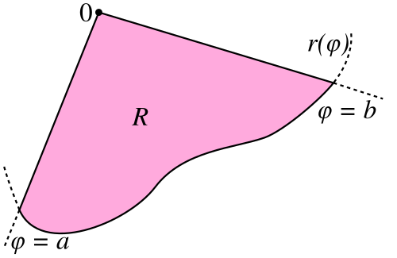
Chứng minh. Ta chia khoảng $[a, b]$ thành $n$ khoảng con bằng nhau, mỗi khoảng có độ rộng:
Chẳng hạn với $n = 5$.
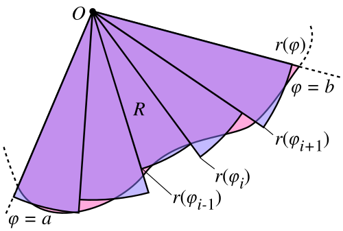
Với mỗi khoảng con thứ $i = 1, 2, \ldots, n$, lấy $\varphi_i$ là trung điểm của khoảng đó. Tại góc $\varphi_i$, ta dựng một hình quạt tròn (sector) có:
- Tâm tại cực,
- Bán kính $r(\varphi_i)$,
- Góc ở tâm bằng $\Delta \varphi$.
Diện tích của hình quạt tròn nhỏ này là:
Tổng diện tích của tất cả các quạt là:
Khi số lượng khoảng con $n$ tăng lên vô hạn, phép cộng này tiến dần đến tích phân Riemann, và ta thu được công thức giới hạn:
Nhận xét. Đây cũng là ý tưởng khi xây dựng tích phân Riemann ta vẫn hay biết.
6. Một số ví dụ
Từ công thức diện tích trong tọa độ cực, ta thử xét một bài toán cụ thể để thấy sự đơn giản của phương pháp này.
Ví dụ (Sưu tầm). Người nghệ sĩ vẽ một bông hoa không màu trên một miếng bìa hình vuông $ABCD$ tâm $O$ bằng một đường cong khép kín $(L)$ rồi tô màu đen phần bên ngoài đường cong này của hình vuông (tham khảo hình trên). Nếu điểm $M$ thuộc cạnh của hình vuông $ABCD$ và tia $OM$ cắt $(L)$ tại điểm $N$ thì $MN=2$ dm. Biết rằng $AB=8$ dm. Phần được nghệ sĩ tô màu đen có diện tích bằng bao nhiêu centimet vuông ?
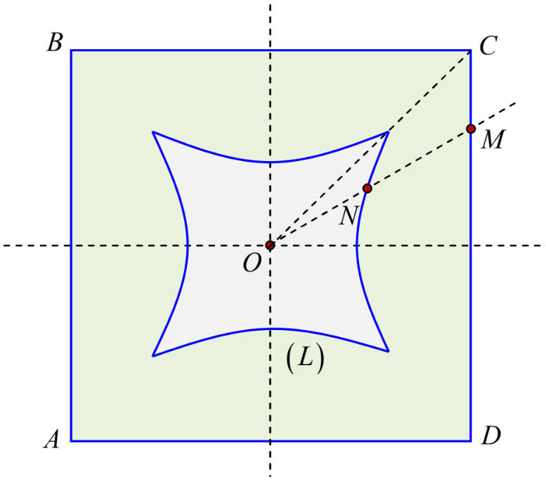
Lời giải.
Ta chỉ cần xét góc $\varphi \in [0; \frac{\pi}{4}]$, và cũng dễ nhận thấy rằng các phần diện tích ở miền khác từ $[\frac{\pi}{4}; \frac{\pi}{2}], [\frac{\pi}{2}; \frac{3\pi}{4}], [\frac{3\pi}{4}; \pi], \ldots , [\frac{7\pi}{4};2\pi]$ gồm $7$ miền cũng đều có diện tích bằng nhau.
Xét điểm $N \in (L)$, $(Ox, ON) = \varphi$ và $ON$ cắt $DC$ tại $M$ thì $MN = 2$, ta tìm $ON$, ta xác định $M', N'$ lần lượt là hình chiếu $M, N$ lên $Ox$.
Vậy đường cong khép kín $(L)$ trong đoạn $[0; \frac{\pi}{4}]$ là
Áp dụng công thức ta có diện tích phủ bởi đường cong $(L)$ và hai tia $Ox, OC$ là:
(Phần còn lại đơn giản, bạn đọc tự hoàn thiện).
Ví dụ (Sưu tầm). Hình vẽ dưới đây cho một miền $D$ (được tô đậm) nằm trong hình vuông cạnh bằng $4$. Miền $D$ này gồm những điểm có khoảng cách tới tâm hình vuông nhỏ hơn hoặc bằng khoảng cách tới cạnh gần nhất của hình vuông. Tính diện tích miền $D$ ?
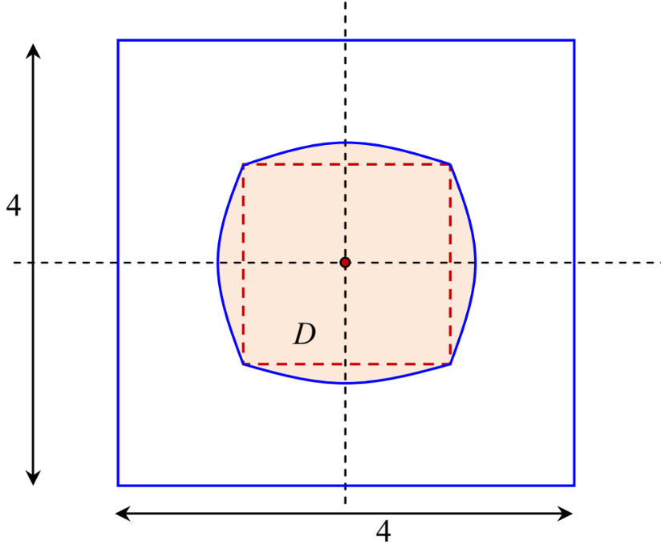
Lời giải.
Từ đề bài, ta cần xác định được đường viền của miền $D$ (đặt là $\mathcal{L}$), đó cũng chính là tập những điểm xảy ra dấu bằng giữa khoảng cách đến tâm và đến cạnh hình vuông.
Ta vẫn đặt hệ tọa độ với tâm $O$ trùng với tâm hình vuông, $Ox$ song song với cạnh hình vuông. Một cách tương tự ta vẫn xét $\theta \in [0; \frac{\pi}{4}]$ và điểm $S \in \mathcal{L}$ thỏa $(Ox, Ox) =\theta$. Gọi $S'$ là hình chiếu của $S$ lên $Ox$, tia $Ox$ cắt cạnh hình vuông tại $H$, ta tìm cách biểu diễn $SO$ theo $\theta$. Đặt :
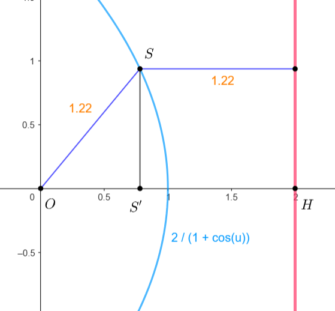
Mặt khác:
Kết hợp $(6.2.1)$ và $(6.2.2)$ nên
Vậy diện tích $D$ từ $0$ đến $\frac{\pi}{4}$ là
Ví dụ (Đề thi thử TN THPT LTT - NK). Trong một cuộc thi sáng tạo các chủ đề liên quan đến Kỷ niệm 50 năm ngày miền Nam hoàn toàn giải phóng, tại hệ thống trường Nguyễn Khuyến-Lê Thánh Tông, một em học sinh đến từ lớp 12B1 đã đạt giải đặc biệt với một thiết kế vô cùng độc đáo. Em học sinh này đã thiết kế bề mặt của một chiếc đồng hồ treo tường bằng sự kết hợp giữa lịch sử, mỹ thuật và toán học.
- Phần trong của mặt đồng hồ là hình vuông có cạnh bằng $2 \ dm$, nơi đây lưu giữ hình ảnh của chiếc xe tăng $390$ của bộ đội Việt Nam tiến vào dinh độc lập.
- Phần ngoài của mặt đồng hồ là đường tròn có bán kính bằng $2 \ dm$.
- Đường cong trung gian có tên $(L)$ là tập hợp tất cả điểm $P$ sao cho nếu kẻ tia Ot bất kỳ cắt hình vuông và đường tròn lần lượt tại $M, N$ thì $P$ là trung điểm $MN$ ($O$ là tâm đường tròn). Tìm diện tích hình phẳng giới hạn bởi đường cong $(L)$ theo đơn vị $dm^2$ và làm tròn đến hàng phần trăm.
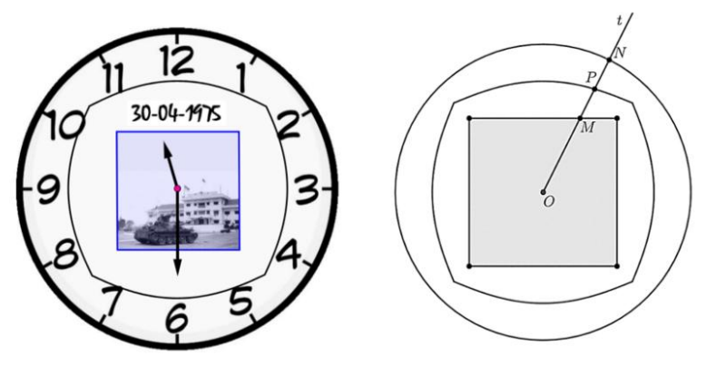
Lời giải.
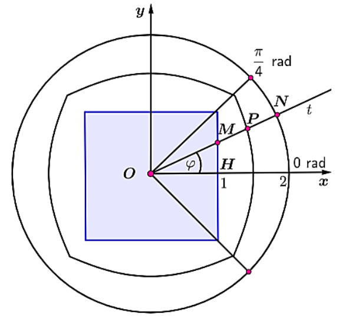
Xét hình vẽ sau với $O$ là tâm hình vuông và tia $Ox$ đi qua trung điểm $H$ của một cạnh hình vuông, gọi $\varphi$ là góc hợp bởi tia $Ox$ và tia $Ot$ với $\varphi \in \left[0; \dfrac{\pi}{4}\right]$.
Ta có:
Diện tích của đường cong $(L)$ là:
Ví dụ (Sưu tầm). Hình phẳng $(H)$ tô màu bên dưới được tạo ra bởi một tam giác đều $ABC$ (có cạnh bằng $20$ cm và có tâm $O$) và một "tam giác cong" $A'B'C'$. Các điểm trên các đoạn cong được tạo ra bằng cách cho một điểm $M$ chạy trên các cạnh của tam giác $ABC$, với mỗi điểm $M$ ta lấy trên tia đối của tia $MO$ một điểm $N$ sao cho $MN = 20$ cm. Tính diện tích hình phẳng $(H)$ ?
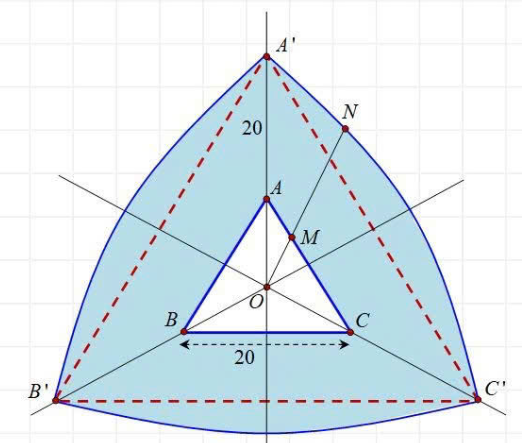
Lời giải. Bài toán này hoàn toàn tương tự bài $1$ nhưng là tam giác, xin nhường lại bạn đọc.
Đây không phải là kiến thức dễ, nó cũng không được dạy ở chương trình THPT nhưng lại là một công cụ vô cùng hữu dụng với các đường cong, hàm phức tạp khi biểu diễn theo phương pháp truyền thống.
Do đó lưu ý rằng đây cũng chỉ là một trick để tính toán nhanh chóng hơn hoặc cũng có thể dùng để kiểm tra lại đáp án. Không nên lạm dụng, vẫn nên ưu tiên với hệ tọa độ Descartes.
Tài liệu tham khảo
- Wikipedia: Polar coordinate system
- LibreTexts: The Polar Coordinate System
- MathWorld: Polar Coordinates
- IITG: Physics Lecture on Polar Coordinates
- MathCentre: Polar Coordinates
- LibreTexts: Area and Arc Length in Polar Coordinates
- YouTube Reference 1
- TikTok Reference 1
- TikTok Reference 2
- YouTube Reference 2
─── HẾT ───